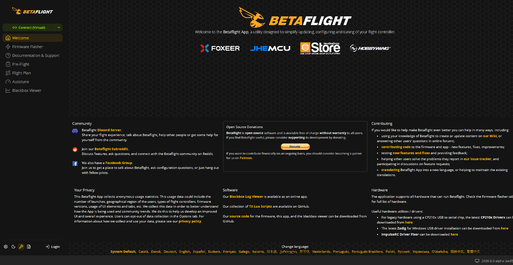
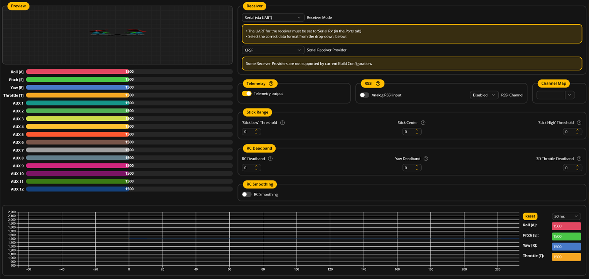

Betaflight: conectar, respaldar y relacionar pantalla con hardware
Interpretar una configuración Betaflight a partir de la placa, el receptor y las conexiones del banco.
Aplicación, firmware y placa son tres cosas
Betaflight Firmware se ejecuta en la controladora; Betaflight App permite inspeccionar y configurar sus opciones. La aplicación se conocía como Configurator y la documentación actual ofrece acceso para PC desde app.betaflight.com. Una versión de aplicación debe ser compatible con la versión de firmware del equipo. El curso registra ambas, junto con placa y target, para que las capturas y la demostración se puedan entender después.

Conectar una placa por USB no obliga a reinstalar firmware. El primer trabajo es identificar y observar la configuración existente. Cambiar el target por el nombre genérico del procesador puede dejar funciones sin correspondencia con el hardware. Las placas de MECRO se preparan antes de la cohorte: modelo, revisión, firmware, aplicación compatible y copia de configuración. Los campos exactos se completan con el equipo real, sin adivinarlos a partir de “F405”.
Para estudiar sin controladora, el alumno utiliza las capturas, el manual y el expediente del caso. La práctica de observar canales o sensores reales se muestra con el equipo docente. La aplicación abierta sin hardware no simula la física del multirrotor.
Conexión USB y respaldo que se puede identificar
- Identifica la controladora y utiliza un cable USB que transfiera datos. Mantén retirada la batería para la inspección USB inicial cuando el manual lo permita.
- Observa el puerto que aparece en Windows y selecciona el correspondiente en la aplicación compatible.
- Si no aparece conexión, revisa cable, puerto, alimentación USB y posibles conflictos de acceso antes de tocar firmware.
- Registra versión de firmware y target; conserva el estado previo de configuración.
- Guarda una copia identificada por placa y fecha. Lee los mensajes de estado antes de plantear cambios.
Consultas de lectura en la CLI de Betaflight
version
status
diff allLas tres consultas se leen como herramientas de identificación y diagnóstico; no se incluyen órdenes para borrar configuración ni scripts de otra aeronave. El respaldo contiene valores de una combinación concreta. No se restaura sin revisar sobre otra placa o versión. Si se necesitara reinstalar, el docente consulta el procedimiento oficial y confirma el target antes de la actividad; no se convierte cada conexión inicial en un ejercicio de flasheo.
El archivo que perdió su identidad
Un estudiante guarda “config_final.txt” sin placa ni versión. ¿Qué falta?
Ver razonamiento del caso
Un nombre y una ficha que relacionen el archivo con equipo, firmware, aplicación y fecha. Sin esa identidad no se sabe a qué hardware ni a qué estado corresponde.
Orientación de la placa y referencia de ejes
La controladora interpreta movimientos en sus ejes. La orientación física y el ajuste de montaje deben corresponder a la aeronave. El docente muestra un movimiento lento del bastidor y la respuesta del modelo 3D. Se compara inclinación hacia delante, lateral y giro, uno por vez. La vista sirve para comprobar coherencia de la orientación estimada; no constituye una prueba de que el dron vuele ni de que los motores estén bien asignados.
Comprobaciones independientes
| Acción del docente | Qué se observa | Qué todavía no demuestra |
|---|---|---|
| Inclinar hacia delante | Modelo responde con sentido coherente | Empuje o orden de motores |
| Inclinar lateralmente | Ejes y orientación | Sintonía de control |
| Girar sobre mesa | Representación correspondiente | Navegación GPS completa |
Si la flecha de la FC apunta a otro lado, no se compensa corrigiendo el mapa del receptor al azar. Cada transformación tiene un lugar: montaje de sensor, entrada de mando y asignación de salidas. El expediente anota dónde se definió la orientación. Cambiar varias a la vez puede ocultar el origen del problema y producir una configuración difícil de revisar.
El acelerómetro y el giróscopo observan magnitudes diferentes. La calibración se realiza con el método requerido por firmware y equipo. El curso introduce qué referencia se está corrigiendo; no promete eliminar todas las vibraciones o errores mediante un solo botón.
Receptor, canales y modos de operación

La tabla de puertos de la clase anterior explica por dónde llega el receptor. En la pestaña correspondiente se comprueba que cada control humano mueva el canal previsto y que los interruptores tengan una función documentada. Si el mando lateral altera otro canal, se investiga la asignación. No basta observar que varias barras se mueven.
Pruebas del mando
| Acción | Evidencia | Decisión |
|---|---|---|
| Mover un eje por vez | Canal y sentido | Conservar o corregir mapa |
| Volver al centro | Valor y dispersión | Revisar referencia |
| Accionar interruptor | Rango y función | Modo previsto identificado |
| Estado de enlace preparado | Indicación de recepción | Contrastar con failsafe |
Angle, Horizon y Acro describen comportamientos distintos en Betaflight y dependen del soporte y configuración. En este curso se reconocen por lo que controla el piloto y por su dependencia de sensores. La demostración de vuelo utiliza el modo que Gerard haya validado para esa aeronave; una lista de modos en pantalla no equivale a dominio de pilotaje.
Laboratorio de configuración comentada
- Completa la ficha de equipo con versión, target y aplicación del caso mostrado.
- Conserva una copia previa y explica para qué serviría.
- Relaciona una línea del esquema con una asignación de puerto.
- Describe la respuesta esperada del modelo 3D en tres movimientos lentos.
- Relaciona tres controles de la radio con sus canales y funciones.
- Localiza una discrepancia preparada: puerto, mapa de canales u orientación. Formula una comprobación por vez.
- Entrega una configuración comentada: qué describe cada evidencia y qué no fue probado.
La clase alterna demostración y lectura individual de capturas. El estudiante no necesita una FC propia para explicar el caso, pero declara si observó el equipo del docente o ejecutó una comprobación en su propio hardware. Las evidencias se guardan con nombre de versión. Así una captura posterior puede compararse con el estado anterior sin depender de la memoria del operador.
Los alumnos con hardware propio solo realizan cambios después de identificar placa y configuración. Durante la demostración no se distribuye un archivo universal para todos los drones. Lo que se comparte es el método de observar, justificar un cambio pequeño y verificar su resultado.
Una pantalla útil para el ensamblador
USB funciona, un motor no
La FC conecta por USB pero un motor no se mueve. ¿Se demuestra un fallo del firmware?
Ver razonamiento del caso
No. USB puede alimentar la FC sin alimentar la etapa del motor. Se revisan por separado energía del ESC, conexión de señal y configuración; la prueba de motores se realizará en el banco preparado, sin hélices.
La sesión siguiente completa la puesta en marcha con salidas, sentidos, comprobaciones de enlace y un modelo sencillo de control. La prioridad sigue siendo ensamblar con criterio. No se dedica el tiempo principal a ajustar ganancias avanzadas antes de demostrar que la orientación, los canales y las salidas coinciden con el objeto.
Investigación dirigida
| Tema | Qué debe encontrar el alumno |
|---|---|
| Aplicación compatible | Referencia oficial para la versión del caso |
| Target | Identificador de la placa exacta |
| Una función de un puerto | Relación con el cableado |
| Un mensaje de estado | Condición que expresa |
Las capturas del manual son referencias de lectura. Antes de impartir la clase, Gerard prepara su propia captura del banco y completa la ficha de versiones. El material permite hacerlo sin cambiar la secuencia docente ni prometer una compatibilidad aún no comprobada.
Práctica guiada
- Distinguir la aplicación de lo que se ejecuta en la FC.
- Mostrar conexión e identificación antes de cualquier modificación.
- Relacionar ejes, canales y puertos con tres pruebas independientes.
- Resolver una discrepancia preparada y conservar el estado anterior.
Preguntas de cierre
¿Conectar obliga a reinstalar firmware?
No. Primero se identifica y se inspecciona la configuración existente.
¿El modelo 3D demuestra que el dron está listo para vuelo?
No. Solo apoya una comprobación de orientación y sensores bajo las condiciones observadas.
¿Un respaldo se copia a cualquier FC?
No. Debe corresponder a placa, target, versión y hardware revisados.
Entrega
Ficha de versiones, respaldo identificado y configuración comentada con tres comprobaciones.
Fuentes para ampliar
[APP] Betaflight. Betaflight App: acceso y compatibilidad.
[INSTALL] Betaflight. Firmware Installation.
[SETUP] Betaflight. Setup Tab.
[PORTS] Betaflight. Ports Tab.
[RX] Betaflight. Receiver Tab.
[CLI] Betaflight. Command Line Interface.